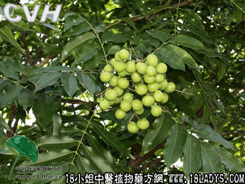

别名：无患根，洗手果根。
植物名：无患子。
生长环境：本品为落叶乔木，为阳性树，喜生于较干燥的砂质土上，村庄旁常见栽培。
分布：我国长江以南各省均有栽培，广东各地常见，此外，朝鲜、越南等地亦有分布。
入药部分：根。
采集期：全年采根，叶；秋采果。
自采地点：家种。
性味：性凉、味苦。
功能：解表、清热、消滞、破瘀。
主治、用量和用法：1、癍痧发热：用干根1至2两，清水煎服；2、外感传里，配伍用；3、伤风咳嗽，配伍用；4、夹色伤寒，配伍用；5、苦伤咳血：干根1至2两，猪瘦肉适量，清水煎服；6、食滞，配伍用。
验方1：（治癍痧发热方）木患根1两、海金沙藤5钱、旱莲草5钱、金盏银盘5钱、清水四碗，煎成一碗，热服。
（方解）本方之木患根，清胃肝之火，兼能解肌；海金沙藤利小便；金盏银盘清热；旱莲草清肝而不伤脾胃，甘凉清鲜，邪自不留。
验方2：（治外感传里方）木患根1两、干蚝豉1两、清水三碗半，煎成一碗，温服。
（方解）本方之干蚝豉滋阴降火；木患根清里热。二味合用，有滋阴降火清热作用，外邪伤阴发热者有效。
验方3：（治夹色伤寒方）木患根1两、榕树须3钱、鸭脚树皮5钱、鬼羽箭5钱、簕角根5钱、清水四碗，煎成一碗，热服。
（方解）木患根、鸭脚树皮解肌’鬼羽箭、簕角根清热，合而用之，为伤寒而复房劳失节者，本方有效。
验方4：（治伤风食滞咳方）木患根1两、芒果核2枚、布渣叶5钱、东风桔5钱、清水四碗，煎成一碗，热服。
（方解）伤风之病：由于外感，邪犯皮毛，而皮毛为肺之合，故而咳嗽，方中木患根祛散表邪，配以东风桔疏肺上咳，布渣叶、芒果核消食导滞，为伤风咳嗽兼食滞之良方。
（方歌）伤风咳嗽有验方，木患根来煎作汤，配入布渣东风桔，芒果用核滞无妨。
附录：（子）1、治白喉：用干果5钱，去外壳，取子打碎，清水煎服。2、治喉痛：配人手指甲，煅灰吹喉；或单用子，煅灰存性，打过地气，为末，加冰片少许，研匀，吹后。3、治疳积：将果煨热，去外壳，每日食2次，每次食2至3粒。
（叶）功用稍逊于根，煎水外洗可治风疹，并能去皮肤上的污垢。
禁忌：孕妇忌服。
参考资料：《现代实用中药》本品味微苦，性平、有小毒。果皮含无患子皂素，可代肥皂；治喉痒，研碎纳入喉中，立开。
《中国药用植物图鉴》果实用为祛痰剂，并能解食河豚中毒及止疝痛、风湿痛。其花治眼痛。
《广东中医》（1958年12期）台山中医院以木患子治疗4例白喉病人，全部于一天一夜间治愈。方法：用木患子（连皮带仁）一斤，用刀切开木患皮四分之三（不脱核），三蒸三晒，每次蒸晒之后，将木患放入木盅内，加入蜜糖3斤，炖六小时，用纱布滤过，制成“木患蜜流膏”，重症每次服5毫升，每小时1次，连服5次，并可用棉签蘸木患蜜搽喉，每小时一次，搽喉法亦可用以预防白喉。
《广东省中医验方交流汇编》内记载治疝气方：木患子根3两、猪小肚1个、水四碗，煎至一碗饮之。
治睾丸上缩方：木患子四只、塘虱鱼一条，或加糯米煮食之。
治鹅喉症方：木患子四粒，白矾2钱，煮水饮。
治喉症吹喉方：木患子两粒，加生盐2分藏入其内，炭火煨透，研末，吹入喉中有效。